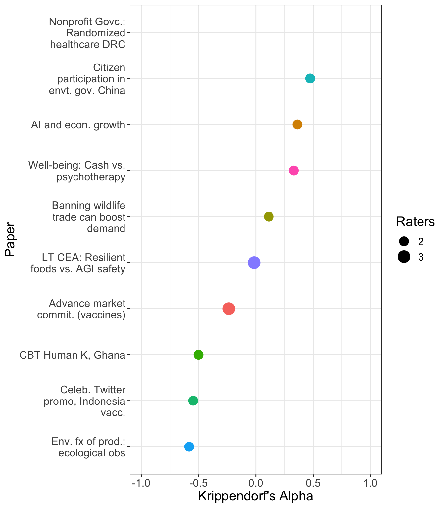

3 Aggregation of evaluators judgments (modeling)
3.1 Notes on sources and approaches
Hanea et al
(Consult, e.g., repliCATS/Hanea and others work; meta-science and meta-analysis approaches)
aggreCAT package
Although the accuracy, calibration, and informativeness of the majority of methods are very similar, a couple of the aggregation methods consistently distinguish themselves as among the best or worst. Moreover, the majority of methods outperform the usual benchmarks provided by the simple average or the median of estimates.
However, these are in a different context. Most of those measures are designed to deal with probablistic forecasts for binary outcomes, where the predictor also gives a ‘lower bound’ and ‘upper bound’ for that probability. We could roughly compare that to our continuous metrics with 90% CI’s (or imputations for these).
Furthermore, many (all their successful measures?) use ‘performance-based weights’, accessing metrics from prior prediction performance of the same forecasters We do not have these, nor do we have a sensible proxy for this.
D Veen et al (2017)
… we show how experts can be ranked based on their knowledge and their level of (un)certainty. By letting experts specify their knowledge in the form of a probability distribution, we can assess how accurately they can predict new data, and how appropriate their level of (un)certainty is. The expert’s specified probability distribution can be seen as a prior in a Bayesian statistical setting. We evaluate these priors by extending an existing prior-data (dis)agreement measure, the Data Agreement Criterion, and compare this approach to using Bayes factors to assess prior specification. We compare experts with each other and the data to evaluate their appropriateness. Using this method, new research questions can be asked and answered, for instance: Which expert predicts the new data best? Is there agreement between my experts and the data? Which experts’ representation is more valid or useful? Can we reach convergence between expert judgement and data? We provided an empirical example ranking (regional) directors of a large financial institution based on their predictions of turnover.
Be sure to consult the correction made here
Also seems relevant:
See Gsheet HERE, generated from an Elicit.org inquiry.
In spite of the caveats in the fold above, we construct some measures of aggregate beliefs using the aggrecat package. We will make (and explain) some ad-hoc choices here. We present these:
- For each paper
- For categories of papers and cross-paper categories of evaluations
- For the overall set of papers and evaluations
We can also hold onto these aggregated metrics for later use in modeling.
Simple averaging
Bayesian approaches
Best-performing approaches from elsewhere
Assumptions over unit-level random terms
Simple rating aggregation
Explicit modeling of ‘research quality’ (for use in prizes, etc.)
Use the above aggregation as the outcome of interest, or weight towards categories of greater interest?
Model with controls – look for greatest positive residual?
3.2 Inter-rater reliability
Inter-rater reliability is a measure of the degree to which two or more independent raters (in our case, paper evaluators) agree. Here, the ratings are the 7 aspects of each paper that evaluators were asked to rate. For each paper, we can obtain one value that summarizes the agreement between the two or three evaluators. Values closer to 1 indicate evaluators seem to agree on what score to attribute to a given paper across categories, while values close to zero indicate raters do not agree, and negative values indicate that raters have opposing opinions.
Expand to learn more about why we used Krippendorf’s alpha, and how to interpret it
We use Krippendorff’s alpha as a measure of interrater agreement. Krippendorff’s alpha is a more flexible measure of agreement and can be used with different levels of data (categorical, ordinal, interval, and ratio) as well as different numbers of raters. It automatically accounts for small samples, and allows its coefficient to be compared across sample sizes.
The calculation displayed below was done using the function kripp.alpha implemented by Jim Lemon in the package irr and is based on Krippendorff, K. (1980). Content analysis: An introduction to its methodology. Beverly Hills, CA: Sage.
Krippendorff’s alpha can range from -1 to +1, and it can be interpreted similarly to a correlation: values closer to +1 indicate excellent agreement between evaluators; values closer to 0 indicate there is no agreement between evaluators; and negative values indicate that there is systematic disagreement between evaluators beyond what can be expected by chance alone, such that ratings are reversed – where a given evaluator tends to rate something as high, the other(s) tend to rate it as low, and vice versa. Source: Inter-Annotator Agreement: An Introduction to Krippendorff’s Alpha by Andrew Mauboussin
Despite the complexity of the calculations, Krippendorff’s alpha is fundamentally a Kappa-like metric. Its values range from -1 to 1, with 1 representing unanimous agreement between the raters, 0 indicating they’re guessing randomly, and negative values suggesting the raters are systematically disagreeing. (This can happen when raters value different things — for example, if rater A thinks a crowded store is a sign of success, but rater B thinks it proves understaffing and poor management).
More information about Krippendorff’s alpha and links to further reading can be found here.
3.3 Decomposing variation, dimension reduction, simple linear models
3.4 Later possiblities
Relation to evaluation text content (NLP?)
Relation/prediction of later outcomes (traditional publication, citations, replication)